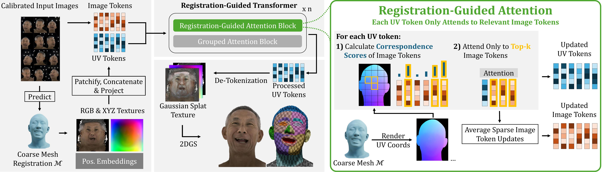
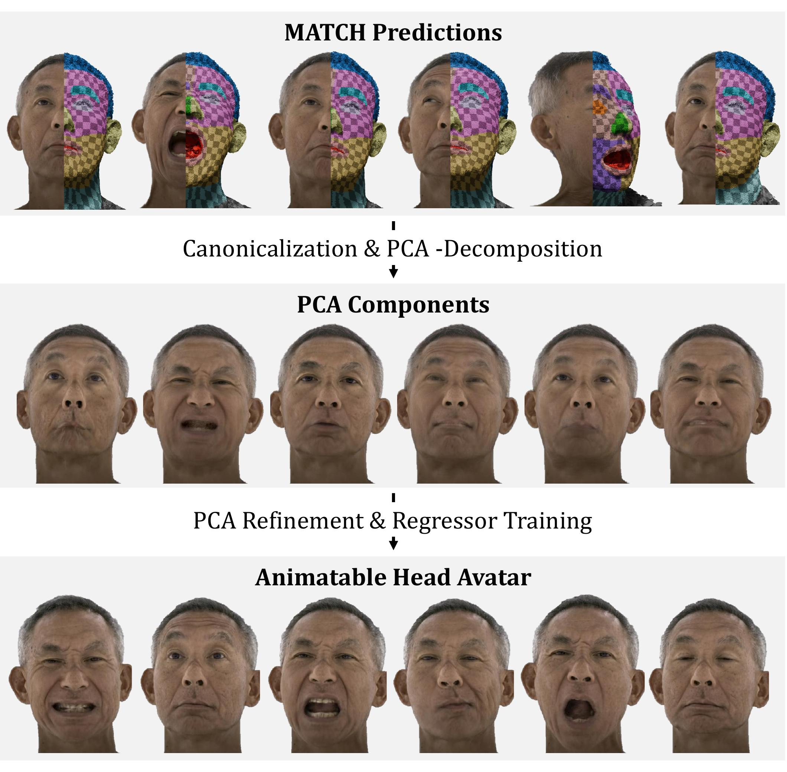

We present MATCH (Multi-view Avatars from Topologically Corresponding Heads), a multi-view Gaussian registration method for high-quality head avatar creation and editing. State-of-the-art multi-view head avatar methods require time-consuming head tracking followed by expensive avatar optimization, often resulting in a total creation time of more than one day. MATCH, in contrast, directly predicts Gaussian splat textures in correspondence from calibrated multi-view images in just 0.5 seconds per frame, without requiring data preprocessing. The learned intra-subject correspondence across frames enables fast creation of personalized head avatars, while correspondence across subjects supports applications such as expression transfer, optimization-free tracking, semantic editing, and identity interpolation. We establish these correspondences end-to-end using a transformer-based model that predicts Gaussian splat textures in the fixed UV layout of a template mesh.
To achieve this, we introduce a novel registration-guided attention block, where each UV-map token attends exclusively to image tokens depicting its corresponding mesh region. This design improves efficiency and performance compared to dense cross-view attention. MATCH outperforms existing methods in novel-view synthesis, geometry registration, and head avatar generation, while making avatar creation 10 times faster than the closest competing baseline.

The model leverages a transformer architecture that efficiently fuses 2D image data with 3D spatial awareness.
UV Tokenization: Using the coarse mesh, the we calculate 3D location and color texture maps which are devided into non-overlapping patches and projectd to UV tokens.
Image and UV tokens are processed by a sequence of two alternating attention blocks.

Beyond static 3D reconstruction, MATCH accelerates the creation of lightweight, animatable GEM avatars by a factor of 10.
@article{prinzler2026match,
title={Feed-forward Gaussian Registration for Head Avatar Creation and Editing},
author={Prinzler, Malte and Gotardo, Paulo and Tang, Siyu and Bolkart, Timo},
booktitle={Proceedings of the IEEE/CVF Conference on Computer Vision and Pattern Recognition},
year={2026}
}